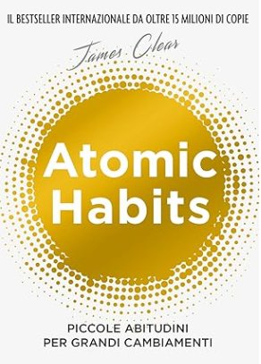

Crescita personale
Articoli, workshop e risorse per chi vuole vivere con più consapevolezza, intenzione e profondità.
Esplora i contenutiRiflessioni, guide pratiche e spunti per la tua crescita
Le abitudini sono il fondamento della crescita. Scopri come costruirle partendo da piccoli gesti quotidiani.
Una guida semplice e pratica per iniziare a meditare, anche se non hai mai provato prima.
Sonno, movimento, connessione, scopo e riflessione: le fondamenta di una mente in equilibrio.
Guide e template da scaricare

di James Clear — Il bestseller su piccole abitudini per grandi cambiamenti.
Scopri il libro →Una guida pratica di 20 pagine per iniziare a meditare ogni giorno.
Scarica gratisIl template che uso ogni settimana per riflettere e pianificare con intenzione.
Scarica gratisUn programma giorno per giorno per costruire routine sane e sostenibili.
Scarica gratis